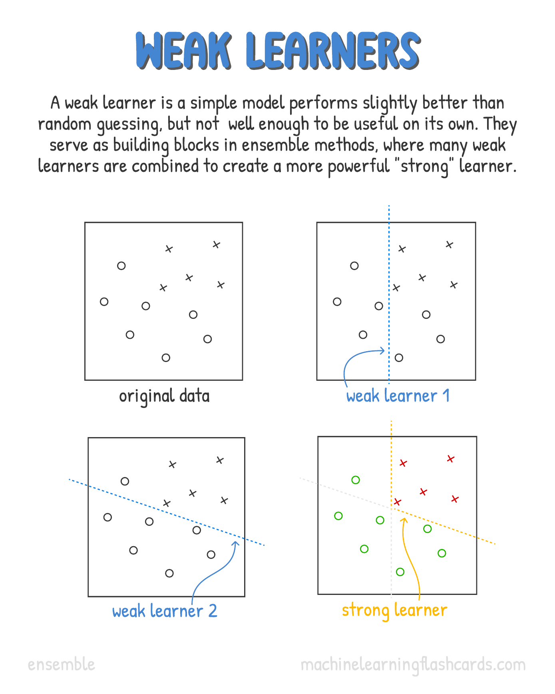
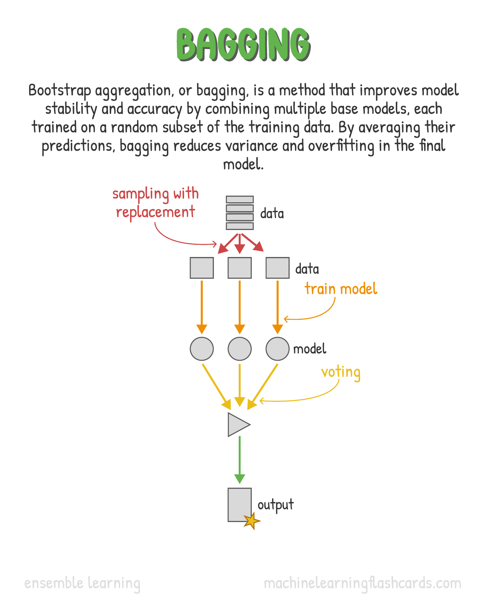
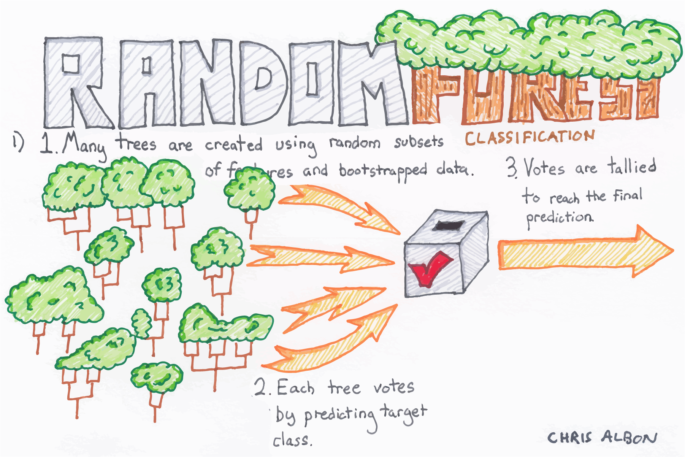
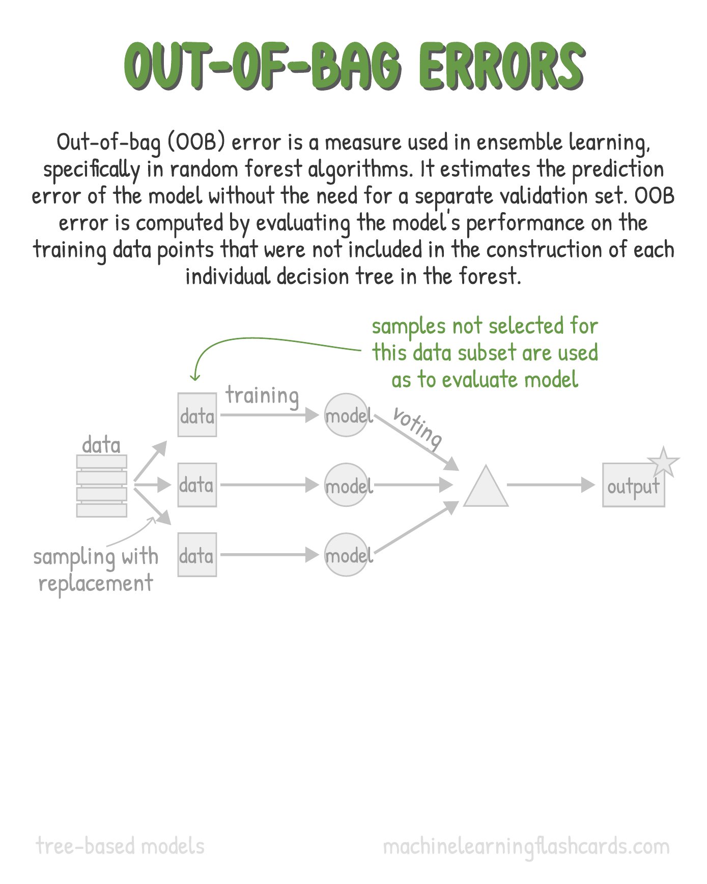
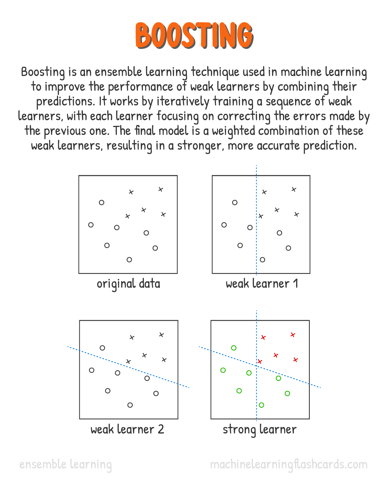
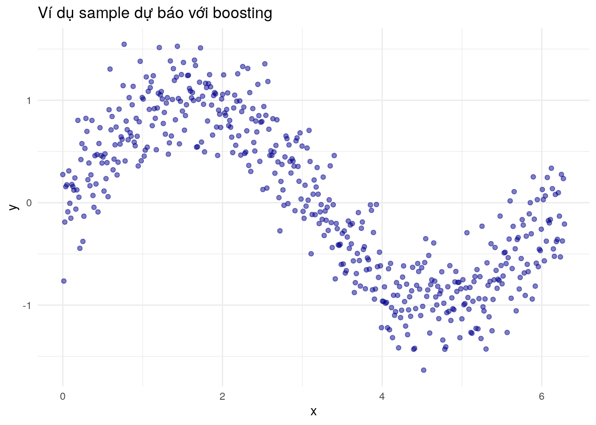
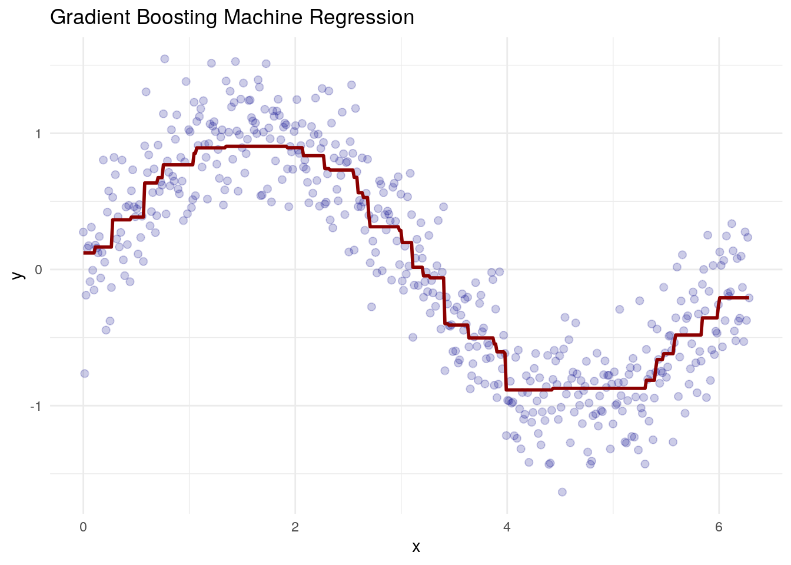
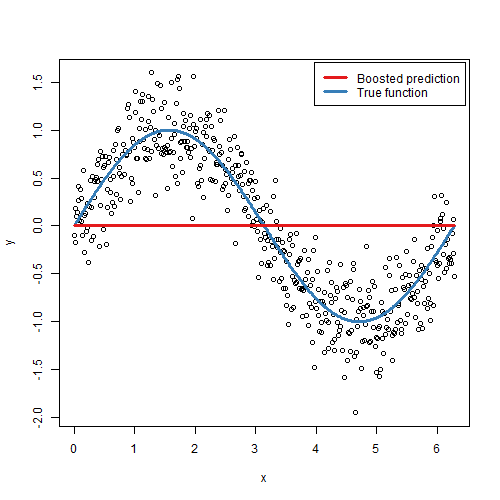

Thuật toán cây quyết dịnh với những ưu điểm nổi trội như dễ triển khai, dễ giải thích nhưng lại nhạy cảm với dữ liệu và dễ bị overfitting. Để khắc phục nhược điểm trên, người ta phát triển các thuật toán kết hợp nhiều cây quyết định riêng lẻ, bao gồm: bagging, random forest & boosting
Các nhóm thuật toán trên dựa trên nguyên lý kết hợp nhiều mô hình yếu (weak learner) sẽ tạo ra một mô hình mạnh hơn.

23.1 Bagging & Random Forest
23.1.1 Giới thiệu
Thuật toán bagging còn được gọi là Boostrap Aggregating sẽ xây dựng nhiều cây quyết định độc lập từ tập dữ liệu gốc với các mẫu khác nhau và tổng hợp kết quả dựa trên từng cây quyết định. Thuật toán diễn ra như sau:
Bước 1: Lấy ngẫu nhiên có hoàn lại (boostrap) các quan sát từ tập dữ liệu gốc. Số lượng quan sát của mỗi bootstrap thông thường bằng số lượng quan sát từ tập dữ liệu ban đầu.
Bước 2: Với mỗi tập dữ liệu boostrap, xây dựng 1 cây quyết định
Bước 3: Tổng hợp mô hình & kết quả dự báo từ tất cả các cây quyết định đã xây dựng

Lưu ý: Với bagging, tất các các biến đầu vào của các cây quyết định là giống nhau, chỉ khác nhau về các quan sát.
Không giống với bagging, thuật toán random forest không chỉ lấy ngẫu nhiên các quan sát (theo dòng) mà còn lấy ngẫu nhiên các biến đầu vào cho từng cây quyết định.
Bước 1: Lấy ngẫu nhiên có hoàn lại (boostrap) các quan sát từ tập dữ liệu gốc. Số lượng quan sát của mỗi bootstrap thông thường bằng số lượng quan sát từ tập dữ liệu ban đầu.
Bước 2: Lấy ngẫu nhiên các biến đầu vào (theo feature)
Bước 3: Với mỗi tập dữ liệu boostrap, xây dựng 1 cây quyết định
Bước 4: Tổng hợp mô hình & kết quả dự báo từ tất cả các cây quyết định đã xây dựng

§
Như vậy, điểm khác biệt quan trọng nhất giữa bagging và random forests là việc chọn số lượng biến đầu vào:
bagging lấy tất cả các biến đầu vào (p)
random forests lấy m biến nhất định - thông thường là \(m ~ sqrt(p)\) với p là số lượng biến từ tập dữ liệu gốc
Do đó, nếu xây dựng mô hình random forests với số lượng biến đầu vào m = p (tức lấy tất cả các biến đầu vào) thì mô hình trở thành bagging. Do đó, có thể nói bagging là một trường hợp đặc biệt của random forest.
§
Out-of-Bag Error Estimation
Có một cách khá đơn giản để ước lượng sai số dự báo (test error) của mô hình bagging mà không cần dùng cross-validation hoặc tập dữ liệu validation. Nhắc lại key của phương pháp bagging là việc các cây quyết định sẽ được xây dựng nhiều lần sử dụng những tập dữ liệu bootstrapped khác nhau. Mỗi một cây quyết định được xây đều sử dụng khoảng 2/3 số quan sát, còn 1/3 quan sát còn lại không được sử dụng trong quá trình xây dựng mô hình sẽ được gọi là những quan sát out-of-bag (OOB).

23.1.2 Thực hành
Do bagging là trường hợp đặc biệt của random forest, ta chỉ cần triển khai thuật toán vởi random forest.
library(ISLR)library(ranger)set.seed(1234)# Datadata("Default")# Chia dữ liệu thành 2 tập: train/testset.seed(1234)train <-sample(nrow(Default), 0.7*nrow(Default))df.train <- Default[train,]df.validate <- Default[-train,]# Biến đầu ra của dữ liệu huấn luyệntable(df.train$default)
No Yes
6769 231
# Biến đầu ra của dữ liệu kiểm tratable(df.validate$default)
No Yes
2898 102
# Xây dựng mô hình trên tập trainingfit_rf <-ranger(default ~ .,data = df.train,importance ="impurity")fit_rf
Ranger result
Call:
ranger(default ~ ., data = df.train, importance = "impurity")
Type: Classification
Number of trees: 500
Sample size: 7000
Number of independent variables: 3
Mtry: 1
Target node size: 1
Variable importance mode: impurity
Splitrule: gini
OOB prediction error: 2.96 %
Bên cạnh đó, ta có thể đánh giá độ quan trọng của các biến khi xây dựng mô hình như sau:
# Biến quan trọngimportance(fit_rf)
student balance income
1.990644 121.504200 27.097542
Kết quả ở trên cho thấy mỗi biến thêm vào sẽ làm tăng độ thuần nhất (hay nói cách khác - giảm độ hỗn độn impurity) trong kết quả dự báo. Giá trị càng cao, biến đầu vào càng quan trọng.
23.2 Boosting
23.2.1 Giới thiệu
Boosting cũng hoạt động theo cách tương tự như bagging, nhưng khác ở chỗ là việc xây dựng các cây quyết định từ những tập dữ liệu con khác nhau không phải là độc lập hoàn toàn với nhau như bagging hay random forests.
Thay vào đó, boosting xây dựng các cây quyết định một cách có trình tự:
Mỗi cây kế tiếp được xây dựng bằng cách sử dụng kết quả từ những cây trước đó.
Boosting tập trung nhiều hơn vào những quan sát bị dự báo sai từ những cây trước để góp phần cải thiện kết quả dự báo cuối cùng.
Boosting không dùng boostrap để chia tập dữ liệu training ban đầu, mà thay vào đó là việc dùng các phiên bản đã được điều chỉnh từ tập dữ liệu train ban đầu để xây dựng các cây quyết định.

Boosting có 2 nhánh lớn là adaboost và gradient boosting. Do sự vượt trội và phổ biến của gradient boosting với các thuật toán như gbm, xgboost, lightgbm, ta chỉ cần tập trung vào gradient boosting.
§
Thuật toán
Cho tập training \(d=(X,y)\). Số lượng cây quyết định (bước) B, tốc độ thuật toán thay đổi (shrinkage factor/learning rate) \(\epsilon\), số tầng của mỗi cây là d đã được xác định trước. Đặt mô hình đầu tiên \(\widehat{G_0} \equiv 0\) và sai số ban đầu \(r=y\).
Với từng bước xây dựng cây quyết định \(b=1,2,…,B\), thực hiện các bước sau:
Xây mô hình cây quyết định \(\widetilde{g}_b\) với dữ liệu (X,r), với số tầng d
Cập nhật mô hình dự báo mới nhất \(\widetilde{g}_b\): \(\widetilde{G}_b=\widetilde{G}_{b−1} + \epsilon*\widetilde{g}_b\)
Cập nhật sai số mô hình để xây dựng mô hình cho bước tiếp theo: \(r_i=r_i−\epsilon*\widetilde{g}_b\), i=1,2,…,n Trả ra kết quả của \(\widehat{G}_b\), b=1,2,…,B. Trong đó, B, ϵ, và d là các tham số cần tối ưu
§
Để tìm hiểu kỹ hơn thuật toán boosting, ta sẽ phân tích kỹ thuật toán gradient boosting với hàm loss là tổng bình phương sai số trong bài toán hồi quy regression
Xây dựng thuật toán với Regression
library(ggplot2)x <-seq(from =0, to =2* pi, length =500)y <-sin(x) +rnorm(length(x), sd =0.3)# Plot dữ liệuggplot() +geom_point(aes(x, y), color ="darkblue", alpha =0.5) +theme_minimal() +labs(title ="Ví dụ sample dự báo với boosting")

# Function to calculate residualscalculate_residuals <-function(y, y_pred) {return(y - y_pred)}# Gradient Boosting Machine implementationgbm_func <-function(X, y, n_trees, learning_rate) {# Bước 1: Tạo mô hình với giá trị trung bình y initial_prediction <-mean(x)# Tạo vector prediction predictions <-rep(initial_prediction, length(y))# Iterate to add trees to the ensemblefor (i in1:n_trees) {# Tính toán sai số tại bước i residuals <-calculate_residuals(y, predictions)# Xây dựng mô hình mới, sử dụng y là residual mới tree <-rpart(residuals ~ X)# Make predictions using the weak learner tree_predictions <-predict(tree, newdata =data.frame(X))# Update predictions with the weighted contribution of the weak learner predictions <- predictions + learning_rate * tree_predictions }return(predictions)}# Bước 2: Set hyperparametersn_trees <-100learning_rate <-0.1library(rpart)# Bước 3: Train the GBM modelpredictions <-gbm_func(x, y, n_trees, learning_rate)# Plot the original data and the GBM predictionsggplot() +geom_point(aes(x = x, y = y), color ="darkblue", alpha =0.2, size =2) +geom_line(aes(x = x, y = predictions), color ="darkred", size =1) +labs(title ="Gradient Boosting Machine Regression",x ="x", y ="y") +theme_minimal()

Quá trình huấn luyện có thể thể hiện như sau:

23.2.2 Hyperparameter
Boosting có 3 tham số cơ bản để tối ưu hóa mô hình (tuning parameters):
Số lượng cây quyết định (B): Với boosting khi số lượng cây quá nhiều có thể dẫn đến overfitting, nên chúng ta sẽ sử dụng cross-validation để lựa chọn số lượng cây
Tốc độ học λ (learning rate hoặc shrinkage): Giá trị nhỏ, dương. λ có thể nhận các giá trị như: 0.1, 0.01, hay 0.001 tùy từng trường hợp. λ càng nhỏ thì mô hình sẽ “học” càng chậm, càng lâu.
Số lần splits, hay phân nhánh (d) của mỗi cây: Tham số này dùng để kiểm soát độ phức tạp của mô hình. Tham số này còn có thể gọi là số tầng cây (interactive depth). Nếu d = 1 (tức cây chỉ có 1 tầng hay 1 split) thì cây quyết định đó được gọi là stump.
23.2.3 Thực hành
Để xây dựng mô hình boosting trên R, chúng ta sẽ sử dụng hàm gbm() trong package gbm.
library(gbm)# Load the Iris datasetdata(iris)# Set the seed for reproducibilityset.seed(123)# Split the data into training and testing setssplit_index <-sample(1:nrow(iris), 0.7*nrow(iris))train_data <- iris[split_index, ]test_data <- iris[-split_index, ]# Define the boosting modelboost_model <- gbm::gbm( Species ~ ., # Target variable and featuresdata = train_data, # Training datadistribution ="multinomial", # Multi class classificationn.trees =100, # Number of trees (iterations)interaction.depth =3, # Maximum depth of each treeshrinkage =0.1# Learning rate (shrinkage))# Make predictions on the test setpredictions <-predict(boost_model,newdata = test_data,n.trees =100,type ="response")# Convert predicted probabilities to class predictionspredicted_classes <-apply(predictions, 1, which.max)predicted_classes[predicted_classes ==1] <-"setosa"predicted_classes[predicted_classes ==2] <-"versicolor"predicted_classes[predicted_classes ==3] <-"virginica"# Compare predicted classes with actual classesaccuracy <-mean(predicted_classes == test_data$Species)cat("Accuracy on the test set:", accuracy, "\n")
Accuracy on the test set: 0.9777778
23.3 Ưu nhược điểm
Các nhóm mô hình random forest & boosting có các ưu nhược điểm điển hình sau.